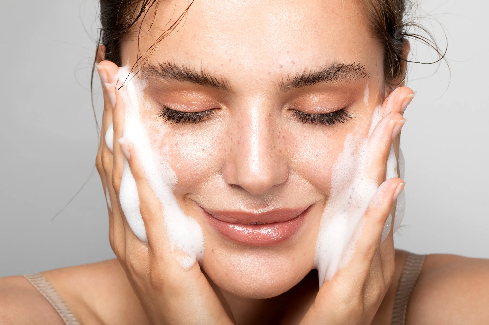

Cuidados diarios para tu piel 🧴
Tu piel es tu carta de presentación. Una buena rutina debe incluir:
- Limpieza suave con agua micelar o gel facial.
- Hidratación con crema adaptada a tu tipo de piel.
- FPS obligatorio cada mañana.
Consulta con un dermatólogo si tienes piel sensible o con afecciones.
Fuente: Revista Belleza NaturalTipos de piel
- 😊Seca: Tirantez, descamación, sensación áspera.
- 😊Grasa: Brillo constante, poros dilatados, tendencia al acné.
- 😊Mixta: Zonas grasas (frente, nariz, mentón) y otras secas.
- 😊Sensible: Enrojecimiento, ardor o picazón con facilidad.
Usar productos adecuados para tu tipo de piel es clave para obtener buenos resultados.